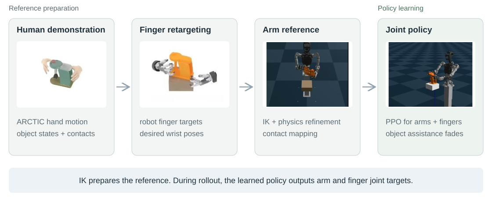

Technical report
BiDexoid: Bimanual Dexterous Manipulation with Upper-Body Control
Abstract
BiDexoid learns coordinated upper-body motion for bimanual dexterous manipulation from a single human reference. We use a demonstration from the ARCTIC dataset [2], which provides human hand motion, articulated-object motion, and hand–object contact annotations. We first retarget the human hand motion to the robot hand, then use the retargeted wrist positions and orientations as inverse-kinematics (IK) targets to construct the arm motion. Together, these form a reference motion for both arms and hands.
This kinematic reference specifies how the robot should move, but does not account for the contact forces needed to complete the task. We refine the reference in physics simulation, then train a reinforcement-learning policy using the demonstrated object motion, retargeted robot motion, and mapped contact locations as guidance. The policy uses feedback from the robot and object to coordinate both arms and hands.
To make learning easier, a virtual object controller (VOC) initially guides the object toward its demonstrated pose and articulation state. We gradually reduce the controller’s gains, weakening this assistance so the robot learns to move and support the object through its own contacts. Learning both arms and hands together incorporates their connected dynamics, allowing arm positioning and finger contact to be coordinated through state feedback.
1. Introduction
Manipulating an articulated object requires controlling both its overall pose and the movement of its connected parts. The arms position and orient the hands, while finger contacts transmit the forces that move or stabilize the object. A human demonstration captures this coordination, but differences in arm reach, joint limits, and hand geometry make direct reproduction on a robot difficult.
Retargeting provides an initial robot motion by adapting the demonstrated hand configurations and wrist poses. The result specifies where the wrists should be and how the fingers should be arranged. Completing the task also depends on how the robot makes and maintains contact as the object moves. Object-motion and contact supervision can guide learning of this interaction in a physics simulator [1].
BiDexoid combines these steps to learn coordinated upper-body manipulation from one human demonstration per task-specific policy. A prepared reference motion for both arms and hands guides a single policy that controls them together. The robot is simulated as a connected system, so arm motion changes the wrist poses and the resulting hand contacts act on the object.
Early in training, the policy can lose contact with the object or fail to support it, preventing it from practicing the rest of the task. To make learning easier, we use a virtual object controller (VOC) to initially guide the object toward its demonstrated pose and articulation state [1]. We gradually reduce the controller’s gains, so the robot must increasingly take over the interaction through its own actions.
2. Methodology
Reference preparation converts the human demonstration into robot joint motion and contact targets. Policy training then uses that reference, together with the demonstrated object motion, to learn task execution through interaction in simulation. Each step is described in detail in the following sections.

2.1 Human reference and robot model
We select one demonstration clip from the processed ARCTIC data [2]. At each timestep, it provides human hand joint positions, the object’s position and orientation, its articulation state, and hand–object contact annotations. Articulation describes the relative movement of an object’s parts, such as a lid rotating about a hinge. The hand motion supplies the motion to retarget; the object trajectory specifies the desired task progression; and the contacts identify where the hands interact with each object part.
All three signals remain aligned by demonstration frame. At each simulation step, training compares the robot and object with the corresponding reference frame. The robot is modeled as a connected upper-body system with a fixed base: both arms and hands are controlled, while the torso and neck remain at fixed joint targets.
2.2 Constructing the reference for arms and hands
We first use dex-retargeting to adapt the human hand motion to the robot’s hand geometry [3]. For each frame, this produces finger joint angles and a desired wrist pose: its position and orientation in the scene.
The wrist poses then become targets for arm IK. The solver finds shoulder, elbow, and wrist joint angles that bring each robot wrist toward its target. Frames are processed in sequence, using the previous solution to initialize the next solve, and the resulting arm trajectories are smoothed. Combining these arm angles with the finger angles gives a reference joint configuration for both arms and hands at every demonstration frame.
2.3 Refining the reference and transferring contacts
Before learning, the reference is refined in Genesis. Each demonstration frame is placed in a separate simulation environment, with the object held at that frame’s demonstrated pose and articulation. Joint-position controllers drive the robot toward the retargeted configuration while the simulator accounts for joint limits and enabled collisions. The resulting joint configurations and hand states are recorded after this simulation. The states from all frames form the refined reference used for training.
The contact annotations are transferred to the robot separately. For each frame, the robot is placed in its reference configuration, and each human contact is assigned to a robot hand link, a rigid segment of the hand. Assignment uses the nearest collision bounding-box centre. Contacts assigned to the same link and object part are averaged into one target location. This provides a correspondence between robot hand links and the object surfaces they should contact, despite the difference between human and robot hand geometry.
2.4 Learning joint control of arms and hands
With the reference prepared, we train one policy for both arms and hands using Proximal Policy Optimization (PPO) in parallel Genesis environments [4]. At each step, the policy receives joint positions and velocities, along with the differences between commanded and current joint angles. It also observes hand keypoint positions, wrist poses, object state, and progress through the demonstration. Hand keypoints are sampled locations on the robot hands used to describe their current configuration. During these rollouts, the object moves under simulated contact and the assistance controller described below.
The policy uses hybrid control. For the arms, its outputs are added as corrections to the reference joint angles at the current demonstration timestep. For the hands, its outputs are mapped directly to target finger joint angles within their limits. Both produce joint position targets, allowing the policy to adjust arm positioning and finger configuration together.
The joint targets are bounded by joint limits and passed to proportional–derivative (PD) controllers that drive the simulated joints. The simulator advances, and the updated robot and object states form the next observation. The reference advances with the rollout; IK has already been completed during reference preparation.
Training compares each simulated step with the corresponding demonstration frame using the following signals. PPO updates the policy from rewards collected over these rollouts.
| Signal | What it encourages |
|---|---|
| Object motion | Reduce errors in object position, orientation, and articulation relative to the human demonstration. |
| Hand and wrist imitation | Keep hand keypoint positions and wrist positions and orientations near the refined robot reference. |
| Contact guidance | Bring simulated contacts toward the mapped target locations for the corresponding hand links and object parts. |
| Joint-reference guidance | Keep commanded joint targets near the prepared joint reference. |
| Regularization | Penalize large actions and, when enabled, excessive contact forces. |
2.5 Learning with a virtual object controller
Early in training, an unskilled policy can lose contact with the object or fail to support it. If the object moves far from its demonstrated state, the robot cannot practice later parts of the task. To make learning easier, we use a virtual object controller (VOC), which applies forces and torques to guide the object toward its demonstrated pose and articulation state [1]. This assistance lets the policy practice the arm motions and contacts needed throughout the demonstration.
As training progresses, the curriculum gradually reduces the VOC’s gains. Lower gains weaken the controller’s correction toward the demonstrated motion, so the robot must take over more of the work of moving and supporting the object. The curriculum aims to remove this assistance entirely, so the desired object motion is produced through the robot’s own contacts. The robot’s joint controllers remain active throughout.
3. Experiments
The simulation examples use a fixed-base Adam U humanoid. A single policy controls 38 joints: seven arm joints and twelve finger joints per side. Five torso and neck joints are held at zero targets and excluded from the action space. The examples cover box and mixer manipulation, with a separate human reference for each task-specific policy.
Each pair presents the prepared reference alongside a learned-policy rollout. Reference playback shows the target robot and object motion derived from the demonstration. Learned policy shows motion produced by the trained controller interacting with the object in simulation. The recordings use different camera angles and durations.
Box manipulation
Reference playback
Learned policy
Mixer manipulation
Reference playback
Learned policy
References
Z. Mandi, Y. Hou, D. Fox, Y. Narang, A. Mandlekar, and S. Song. “DexMachina: Functional Retargeting for Bimanual Dexterous Manipulation.” ICML, 2026.
Z. Fan, O. Taheri, D. Tzionas, M. Kocabas, M. Kaufmann, M. J. Black, and O. Hilliges. “ARCTIC: A Dataset for Dexterous Bimanual Hand-Object Manipulation.” CVPR, 2023.
Dexsuite contributors. dex-retargeting. Human-to-robot hand motion retargeting.
J. Schulman, F. Wolski, P. Dhariwal, A. Radford, and O. Klimov. “Proximal Policy Optimization Algorithms.” arXiv:1707.06347, 2017.